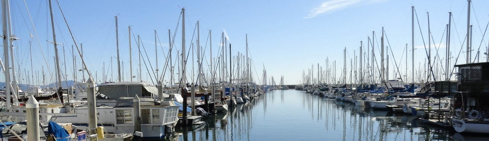

I'm an Aeronautical Engineer with a MSc. on Aircraft Control. Since Dec. 2010, though, I have been working with wind energy: initially with wind ressource assessment and more recently with wind turbine simulations and load calculations. Here's my CV:
I enjoy programming and have been doing some stuff mostly on high level languages like Matlab/Scilab and Python, with occasional incursions in C and Fortran. (Lisp is an object of intelectual admiration which I'd love to add to my practical repertoire.)
You can also invite me for a nice beer or to go sailing(or both!). There is only a very small chance I'll refuse any of those.
If you think I might be interested in a project you are undertaking, fell free to contact me, or use LinkedIn to get in touch:
